Stein Variational Gradient Descent
Herbie Wright
Part 1: Variational Inference
Bayesian Inference
- Consider we are trying to infer some parameter \theta \in \mathcal X from some observations/data D.
- Assume we have a known likelihood function p(D | \theta)
- We also want to incorporate prior knowledge to bias our estimate. We express this with a prior distribution p(\theta)
- In order to infer \theta, we want to find the posterior distribution, p(\theta | D). By Bayes theorem: p(\theta | D) = \frac{p(D | \theta) p(\theta)}{\int_\mathcal{X} p(D | \theta') p(\theta') d\theta'}
- Problem. Given D, prior, and likelihood, find p(\theta | D)
Variational Inference
- Bayes Theorem (from prev.): p(\theta | D) = \frac{p(D | \theta) p(\theta)}{\int_\mathcal{X} p(D | \theta') p(\theta') d\theta'}
- In general, the integral in the denominator is intractable.
- We can try to find an approximation to posterior p from a parametric class of distributions \mathcal Q: q^* = \text{arg}\min_{q \in \mathcal Q} \text{dist}(q, p)
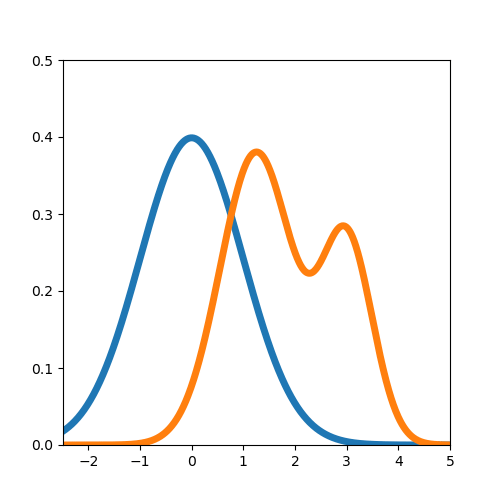
KL Divergence
- Variational objective (from prev.): q^* = \text{arg}\min_{q \in \mathcal Q} \text{dist}(q, p)
- Idea. Use Kullback-Leibler (KL) divergence to measure “distance”: KL(q \| p) = \mathbb E_{x \sim q(x)} \left[\ln \frac{q(x)}{p(x)}\right] = \mathbb E_q \left[\ln q(x) \right] - \mathbb E_q \left[\ln p(x) \right]
- Note. KL(q \| p) \neq KL(p \| q)
- Note. If \bar{p}(x) = p(x) / Z, then KL(q \| p) = \mathbb E_q [\ln q(x)] - \mathbb E_q[\ln \bar{p}(x)] + \ln Z.
- New objective: q^* = \text{arg}\min_{q \in \mathcal Q} KL(q \| p)
The Algorithm
- We consider approximating p with a set of m particles \{x_i\}_{i \in [n]}
- Begin: Randomly sample initial particles, \{x_i^{(0)}\}_{i \in [n]}, then repeat:
- Repeat: Update each particle with the following rule: x_i^{(t+1)} = x_i^{(t)} + \epsilon^{(t)} \hat{\phi}^*(x_i^{(t)}) where \hat{\phi}^*(x) = \frac{1}{n} \sum_j \left[k(x_j^{(t)}, x) \nabla \ln p(x_j^{(t)}) + \nabla_{x_j^{(t)}} k(x_j^{(t)}, x)\right]
- Claim. This minimizes KL Divergence
The Theorem
- Theorem. (3.3 from [1]) Let T(x) = x + f(x), where f \in \mathcal H^d and q_{[T]} the density of random variable z = T(x) when x \sim q. Then \nabla_f KL (q_{[T]} \| p) \rvert_{f = 0} = - \phi^*_{q, p} where \phi^*_{q, p} = \mathbb E_q [k(x, \cdot) \nabla_x \ln p(x) + \nabla_x k(x, \cdot)].
Part 2: Background
RKHS
- Definition. Given a p.d. kernel k: \mathcal X \times \mathcal X \rightarrow \mathbb R, the corresponding Reproducing Kernel Hilbert Space (RKHS) is defined as \mathcal H = \left\{f(\cdot) = \sum_i \alpha_i k(x_i, \cdot) : x_1, x_2, ... \in \mathcal X, \alpha_1, \alpha_2, ... \in \mathbb R \right\} where the inner product is \langle f, g \rangle_\mathcal{H} = \sum_{i} \sum_j \alpha_i \beta_i k(x_i, x_j).
- Reproducing Property: For any f \in \mathcal H, it follows that f(x) = \langle k(x, \cdot), f \rangle_{\mathcal H}
- Examples of Kernels:
- Linear: k(x, y) = x^\top y
- Gaussian: k(x, y) = \exp(-\gamma \| x - y \|^2)
Functional Gradient in RKHS
- Definition. Let F: \mathcal H \rightarrow \mathbb R be a functional over an RKHS \mathcal H, the functional gradient is defined as the \nabla_f F[f] satisfying F[f + \epsilon g] = F[f] + \epsilon \langle \nabla_f F[f], g \rangle_\mathcal{H} + O(\epsilon^2)
- Example. Let E_x [f] = f(x) be the evaluation functional at x. Then \nabla_f E_x[f] = k(x, \cdot) because we have: E_x [f + \epsilon g] = f(x) + \epsilon g(x) = f(x) + \epsilon\langle k(x, \cdot), g\rangle
Steins Identity
- Steins Identity: Let p(x) be a smooth density supported on \mathcal X \subseteq \mathbb R^d and \phi(x) = [\phi_1(x), ..., \phi_d(x)]^\top be a smooth vector function. Then for sufficiently regular \phi, \mathbb E_p [\mathcal A_p \phi(x)] = 0 where \mathcal A_p \phi(x) = \phi(x) \nabla_x \ln p(x)^\top + \nabla_x \phi(x) is the Stein operator.
- Identity can be checked by integration by parts
Stein Discrepancy
- Definition. The Stein Discrepancy between two distributions q, p is defined as \mathbb S (q, p) = \max_{\phi \in \mathcal F} \left\{ \left[\mathbb E_q \text{tr} (\mathcal A_p \phi(x))\right]^2 \right\} where \mathcal F is some class of functions
- Can think about this as maximum violation of Stein’s identity.
Kernelized Stein Discrepancy
- What if we choose \mathcal F = \mathcal H^d for RKHS \mathcal H?
- Definition. The Kernelized Stein Discrepancy is defined as \mathbb S (q, p) = \max_{\phi \in \mathcal H^d} \left\{ \left[\mathbb E_q \text{tr} (\mathcal A_p \phi(x))\right]^2 : \|\phi\| \leq 1\right\}
- This has a solution: \phi^*_{q, p}(\cdot) = \mathbb E_q \left[ \mathcal A_p k(x, \cdot) \right] \mathbb S(q, p) = \| \phi^*_{q, p} \|
Change of Variables Formula
- Consider a random variable x \sim q(x) and then transforming it to z = T(x) with distribution q_{[T]}
- Then, the following is true: q_{[T]}(z) = q(T^{-1} (z)) \cdot | \text{det}(\nabla_z T^{-1}(z)) |
- This will be useful during proof of the main theorem
- Also: KL(q_{[T]} \| p) = KL(q \| p_{[T^{-1}]})
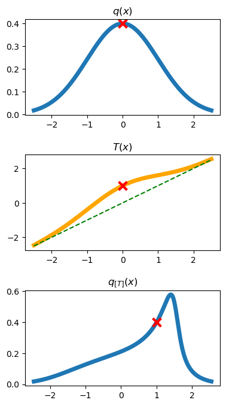
Part 3: Proving the Theorem
Theorem
Theorem. (3.3 from [1]) Let T(x) = x + f(x), where f \in \mathcal H^d and q_{[T]} the density of random variable z = T(x) when x \sim q. Then \nabla_f KL (q_{[T]} \| p) \rvert_{f = 0} = - \phi^*_{q, p} (x) where \phi^*_{q, p} (x) = \mathbb E_q [k(x, \cdot) \nabla_x \ln p(x) + \nabla_x k(x, \cdot)].
Recall: Let F[f] = KL(q_{[T]} \| p), then the functional gradient is the \nabla_f F[f] that satisfies F[f + \epsilon g] = F[f] + \epsilon \langle \nabla_f F[f], g \rangle_\mathcal{H} + O(\epsilon^2)
Proof (part 1)
- Proof. Let F[f] = KL(q_{[x + f(x)]} \| p) = KL(q \| p_{[(x + f(x))^{-1}]}). Then we have F[f + \epsilon g] = KL(q \| p_{[(x + f(x) + \epsilon g(x))^{-1}]}) = \mathbb E_q\left[\ln q(x) - \ln p_{[(x + f(x) + \epsilon g(x))^{-1}]}(x) \right] = \mathbb E_q\left[\ln q(x) - \ln p(x + f(x) + \epsilon g(x))\right] - \mathbb E_q \left[ \ln \text{det} (I + \nabla_x f(x) + \epsilon \nabla_x g(x)) \right] Which means we have F[f + \epsilon g] - F[f] = -\Delta_1 - \Delta_2 \Delta_1 = \mathbb E_q [\ln p(x + f(x) + \epsilon g(x))] - \mathbb E_q [\ln p(x + f(x))] \Delta_2 = \mathbb E_q [\ln \text{det} (I + \nabla_x f(x) + \epsilon \nabla_x g(x))] - \mathbb E_q [\ln \text{det} (I + \nabla_x f(x))]
Proof (part 2)
- We have: \Delta_1 = \mathbb E_q [\ln p(x + f(x) + \epsilon g(x))] - \mathbb E_q [\ln p(x + f(x))] = \epsilon \mathbb E_q [\nabla_x \ln p(x + f(x)) \cdot g(x)] + O(\epsilon^2) = \epsilon \mathbb E_q [\nabla_x \ln p(x + f(x)) \cdot \langle k(x, \cdot), g \rangle_{\mathcal H^d}] + O(\epsilon^2) = \epsilon \langle \mathbb E_q [\nabla_x \ln p(x + f(x)) \cdot k(x, \cdot) ] , g \rangle_{\mathcal H^d} + O(\epsilon^2)
Proof (part 3)
- Similarly: \Delta_2 = \mathbb E_q [\ln \text{det} (I + \nabla_x f(x) + \epsilon \nabla_x g(x))] - E_q [\ln \text{det} (I + \nabla_x f(x))] = \epsilon \mathbb E_q \left[(I + \nabla_x f(x))^{-1} \cdot \nabla_x g(x) \right] + O(\epsilon^2) = \epsilon \mathbb E_q \left[(I + \nabla_x f(x))^{-1} \cdot \langle\nabla_x k(x, \cdot), g\rangle_{\mathcal H^d}\right] + O(\epsilon^2) = \epsilon \big\langle \mathbb E_q \left[ (I + \nabla_x f(x))^{-1} \cdot \nabla_x k(x, \cdot)\right], g\big\rangle_{\mathcal H^d} + O(\epsilon^2)
Proof (part 4)
- We had F[f + \epsilon g] - F[f] = - \Delta_1 - \Delta_2 with: \Delta_1 = \epsilon \langle \mathbb E_q [\nabla_x \ln p(x + f(x)) \cdot k(x, \cdot) ] , g \rangle_{\mathcal H^d} + O(\epsilon^2) \Delta_2 = \epsilon \big\langle \mathbb E_q \left[ (I + \nabla_x f(x))^{-1} \cdot \nabla_x k(x, \cdot)\right], g\big\rangle_{\mathcal H^d} + O(\epsilon^2) Then F[f + \epsilon g] = F[f] + \epsilon \langle \nabla_f F[f], g \rangle_\mathcal{H} + O(\epsilon^2) exactly when \nabla_f F[f] = - \mathbb E_q \left [ \nabla_x \ln p(x + f(x)) \cdot k(x, \cdot) + (I + \nabla_x f(x))^{-1} \cdot \nabla_x k(x, \cdot) \right]
- If we evaluate at f(x) = 0, we get: \nabla_f F[f] \rvert_{f = 0} = - \mathbb E_q \left[ \nabla_x \ln p(x) \cdot k(x, \cdot) + \nabla_x k(x, \cdot) \right]. Thus, our result. \square
Part 4: Understanding SVGD
From the Theorem to the Method
- Theorem. Let T(x) = x + f(x), R.V. z = T(x) for x \sim q. Then \nabla_f KL (q_{[T]} \| p) \rvert_{f = 0} = - \phi^*_{q, p} (x) where \phi^*_{q, p} (x) = \mathbb E_q [k(x, \cdot) \nabla_x \ln p(x) + \nabla_x k(x, \cdot)].
- The Method:
- Sample initial “particles”, \{x_i^{(0)}\}_{i \in [n]} from initial distribution q_0
- Repeatedly transform our particles so that q_t \rightarrow p: \hat{\phi}^*(x) = \frac{1}{n} \sum_j \left[k(x_j^{(t)}, x) \nabla \ln p(x_j^{(t)}) + \nabla_{x_j^{(t)}} k(x_j^{(t)}, x)\right] x_i^{(t+1)} = x_i^{(t)} + \epsilon^{(t)} \hat{\phi}^*(x_i^{(t)})
Interpretation of Update Equation
- We have the following update equation: \hat{\phi}^*(x) = \frac{1}{n} \sum_j \left[k(x_j^{(t)}, x) \nabla \ln p(x_j^{(t)}) + \nabla_{x_j^{(t)}} k(x_j^{(t)}, x)\right] x_i^{(t+1)} = x_i^{(t)} + \epsilon^{(t)} \hat{\phi}^*(x_i^{(t)})
- We can interpret the term k(x_j^{(t)}, x) \nabla \ln p(x_j^{(t)}) as a particle trying to climb to high probability areas
- We can interpret the term \nabla_{x_j^{(t)}} k(x_j^{(t)}, x) as a repulsive force trying to push particles away from each other
- Note. We can apply this to general optimization problems of the form \min_x f(x) by defining p(x) \propto \exp(-f(x)).
Practical Considerations
- The original paper [1] made a couple decisions when implementing SVGD:
- Used a Gaussian kernel with a scaling term that depended on median of distances between particles (changes as algorithm is run)
- Used AdaGrad [2] method for adaptive step sizes (step size gets smaller over time)
- Initialized particles with the prior distribution
SVGD Example 1
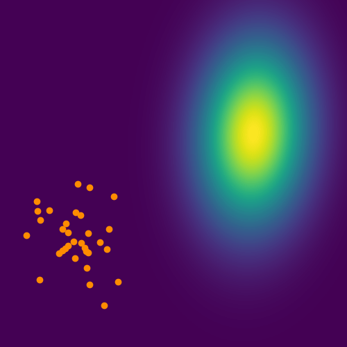
SVGD Getting Stuck
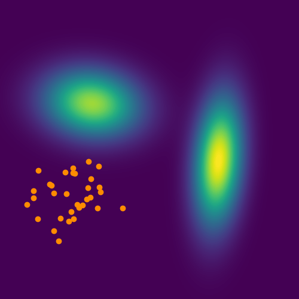
SVGD Not Getting Stuck
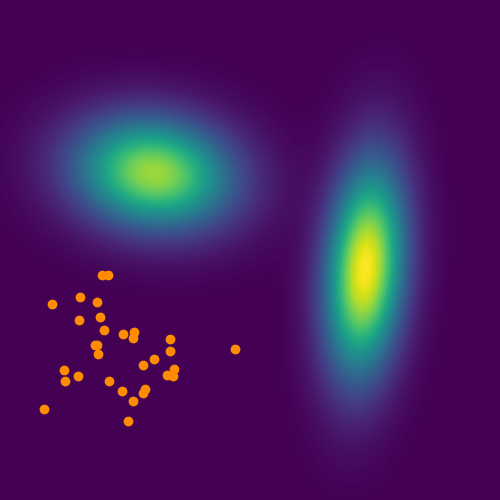
Results from [1] (Particle Efficiency)
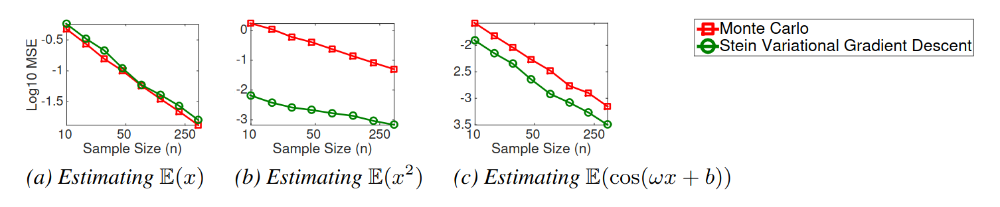
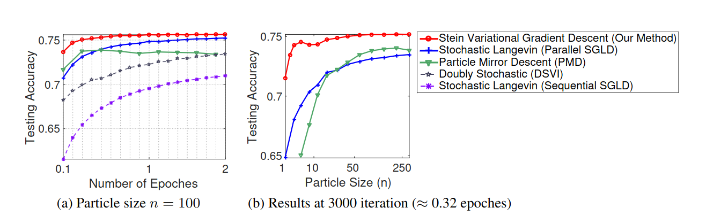
Results from [1] (Bayesian Neural Network)
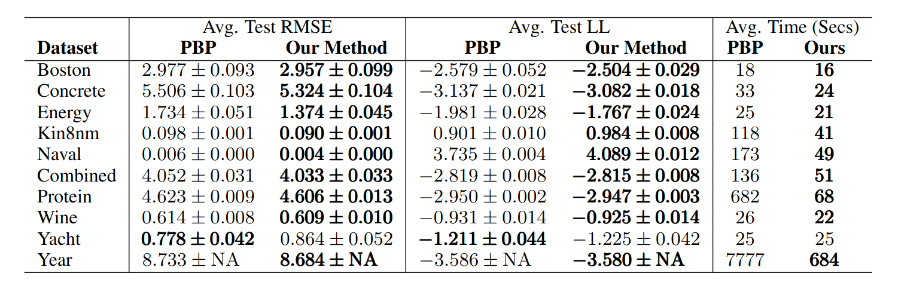
Part 5: Analysis, Extensions, and Applications
Theoretical Analysis
- “Stein Variational Gradient Descent as Gradient Flow” [3]
- “Convergence of Stein variational gradient descent under a weaker smoothness condition” [4] t(\epsilon) \in O\left( \frac{1}{\epsilon} \right)
- “A finite-particle convergence rate for stein variational gradient descent” [5] \text{KSD}(n) \in O\left(\frac{1}{\sqrt{\log \log n}}\right)
- And others
2nd Order SVGD
- “A Stein variational Newton method” [6]
- “Projected Stein variational Newton: A fast and scalable Bayesian inference method in high dimensions” [7]
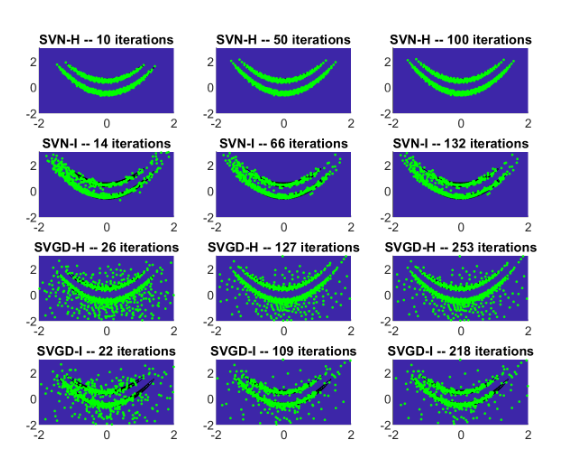 (from [6])
Dealing with Constraints
- “Sampling in constrained domains with orthogonal-space variational gradient descent” [8] can deal with a single equality constraint
- “Constrained stein variational trajectory optimization” [9] can deal with equality and inequality constraints
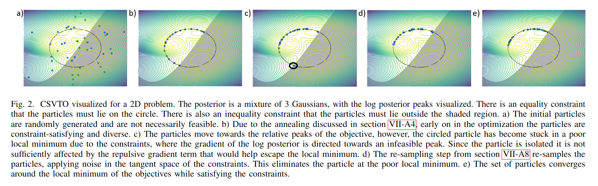 (from [9])
SGVD For State Estimation
“Stein particle filter for nonlinear, non-Gaussian state estimation” [10]
- Figure from paper is on the right:
- Uses SGVD instead of traditional particle filter for state estimation
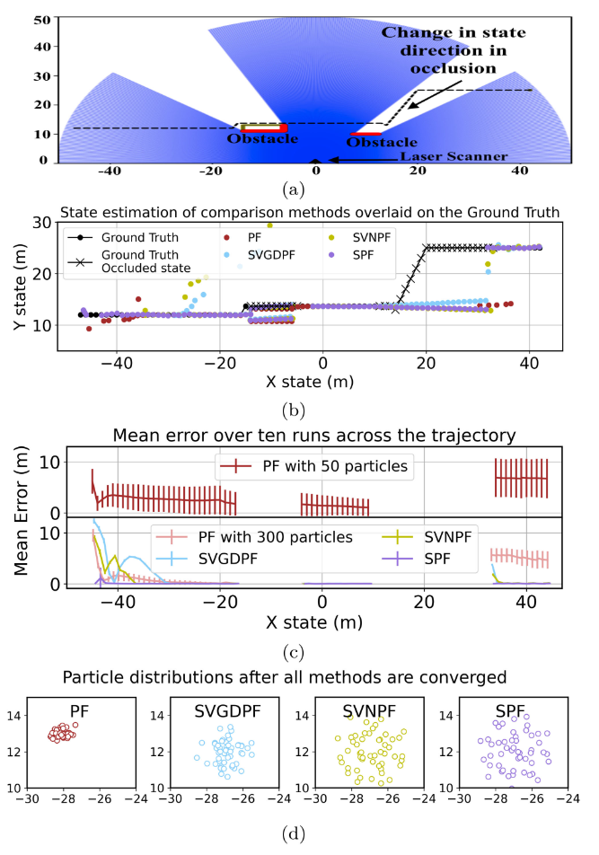
Stein Variational Model Predictive Control [11]

References
[1] Q. Liu and D. Wang, “Stein variational gradient descent: A general purpose bayesian inference algorithm,” Advances in neural information processing systems, vol. 29, 2016.
[2] J. Duchi, E. Hazan, and Y. Singer, “Adaptive subgradient methods for online learning and stochastic optimization.” Journal of machine learning research, vol. 12, no. 7, 2011.
[3] Q. Liu, “Stein variational gradient descent as gradient flow,” Advances in neural information processing systems, vol. 30, 2017.
[4] L. Sun, A. Karagulyan, and P. Richtarik, “Convergence of stein variational gradient descent under a weaker smoothness condition,” in International conference on artificial intelligence and statistics, 2023, pp. 3693–3717.
[5] J. Shi and L. Mackey, “A finite-particle convergence rate for stein variational gradient descent,” Advances in Neural Information Processing Systems, vol. 36, 2024.
[6] G. Detommaso, T. Cui, Y. Marzouk, A. Spantini, and R. Scheichl, “A stein variational newton method,” Advances in Neural Information Processing Systems, vol. 31, 2018.
[7] P. Chen, K. Wu, J. Chen, T. O’Leary-Roseberry, and O. Ghattas, “Projected stein variational newton: A fast and scalable bayesian inference method in high dimensions,” Advances in Neural Information Processing Systems, vol. 32, 2019.
[8] R. Zhang, Q. Liu, and X. Tong, “Sampling in constrained domains with orthogonal-space variational gradient descent,” Advances in Neural Information Processing Systems, vol. 35, pp. 37108–37120, 2022.
[9] T. Power and D. Berenson, “Constrained stein variational trajectory optimization,” arXiv preprint arXiv:2308.12110, 2023.
[10] F. A. Maken, F. Ramos, and L. Ott, “Stein particle filter for nonlinear, non-gaussian state estimation,” IEEE Robotics and Automation Letters, vol. 7, no. 2, pp. 5421–5428, 2022.
[11] A. Lambert, F. Ramos, B. Boots, D. Fox, and A. Fishman, “Stein variational model predictive control,” in Conference on robot learning, 2021, pp. 1278–1297.